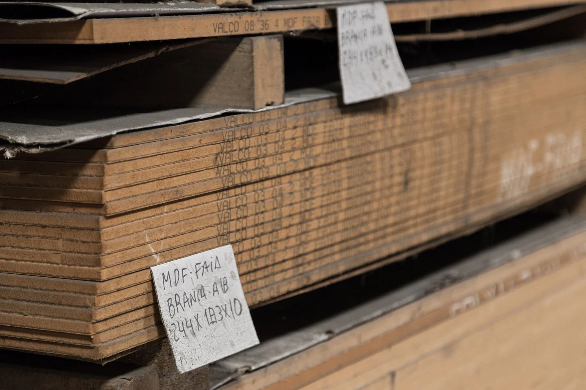

MATERIAIS
Escolha por família.
Continue pela aplicação.
Conheça a gama publicada pela empresa. As referências, dimensões e disponibilidade são confirmadas no contacto.
01 / MADEIRAS
Madeira para trabalhar.
Madeiras nacionais e importadas, madeiras aparelhadas e lamelados.
A aplicação e as medidas pretendidas ajudam a enquadrar o pedido. Pode consultar também o serviço de torneador de madeiras.
Indicar o material e as medidas

02 / PAINÉIS E DERIVADOS
Da estrutura ao acabamento.
- Aglomerados
- Contraplacados
- MDF
- Versões cruas, folheadas ou laminadas
Para pedir uma peça cortada, indique também a espessura e o acabamento pretendido.
Preparar pedido de painéis03 / PAVIMENTOS
Interiores e exterior.
Soalhos flutuantes e em madeira maciça. Decks em madeira natural e em materiais compósitos.
04 / COMPLEMENTOS
Outros materiais.
Portas lisas e decorativas, isolamentos em esferovite e colas de diversos tipos.
Consultar a empresa